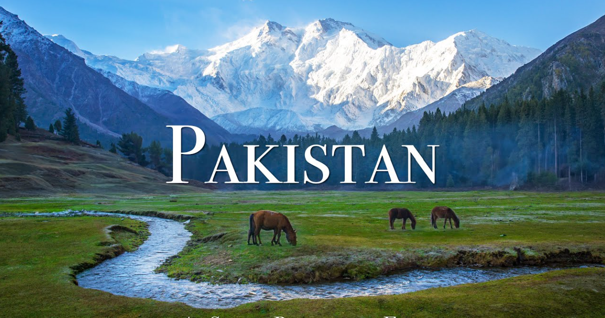
Pakistan's National Tourism Brand Salam Pakistan by PTDC, launched by Prime Minister of Pakistan
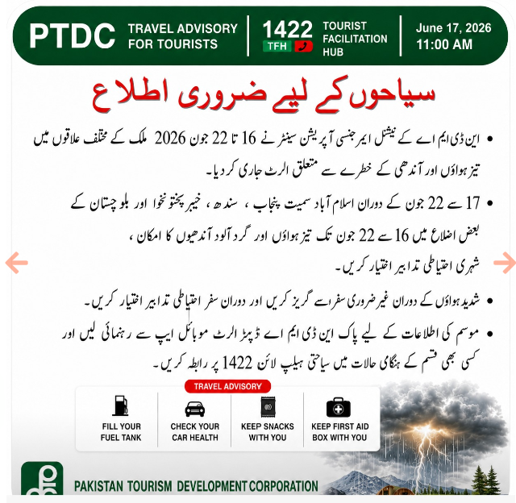
Welcome to Pakistan
From the mighty stretches of the Karakorams in the North to the vast alluvial delta of the Indus River in the South, Pakistan remains a land of high adventure and nature. Trekking, mountaineering, white water rafting, wild boar hunting, mountain and desert jeep safaris, camel and yak safaris, trout fishing and bird watching, are a few activities which entice the adventure and nature lovers to Pakistan.
Latest Updates
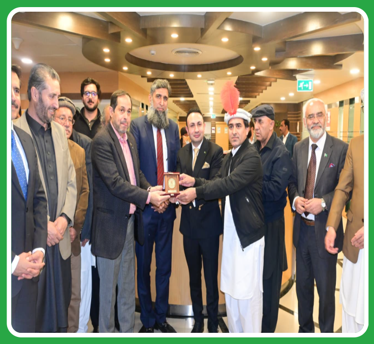
ECO HIKE FOR INTERNATIONAL mountain DAY DECEMBER 11, 2025
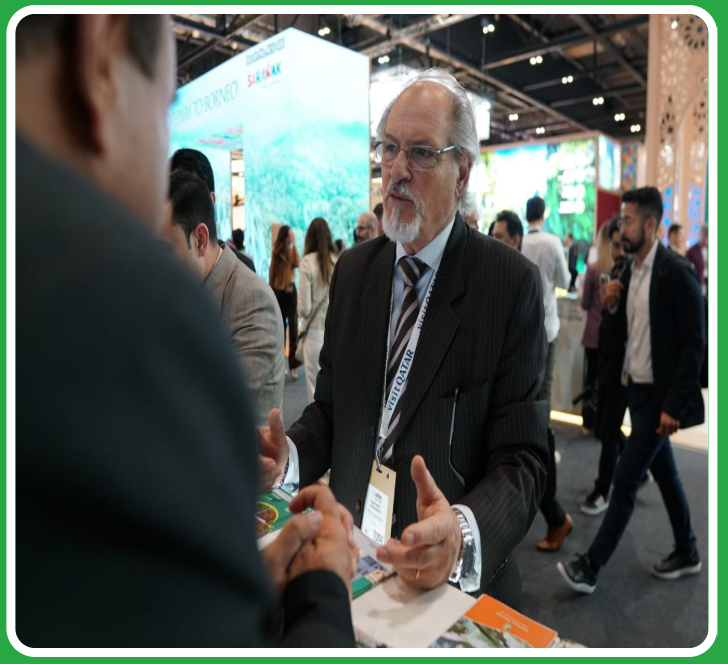
GLOBAL DESTINATION EXPO DECEMBER 1-2, 2025
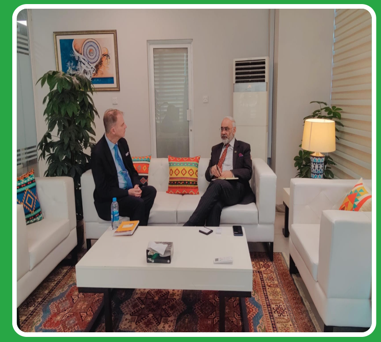
BHUTANESE AND SINGAPOREAN BUDDHISTAN DELEGATION VISIT PTDC DECEMBER 01,2025
PTDC
Pakistan Tourism Development Corporation
Pakistan Tourism Development Corporation (PTDC) was incorporated on March 30,
1970, under the repealed Companies Act 1913
(now the Companies Ordinance, 1984) as a Public Corporation Limited by shares.
PTDC is owned by the Government of Pakistan (99.75% share). The principal objective of
the corporation is to promote
and develop tourism in Pakistan.
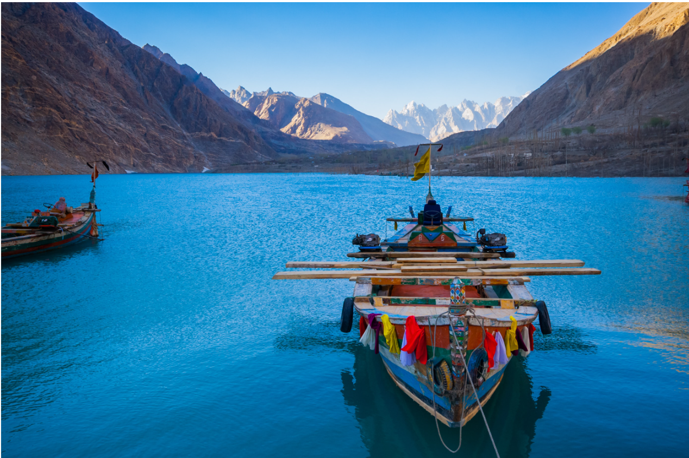
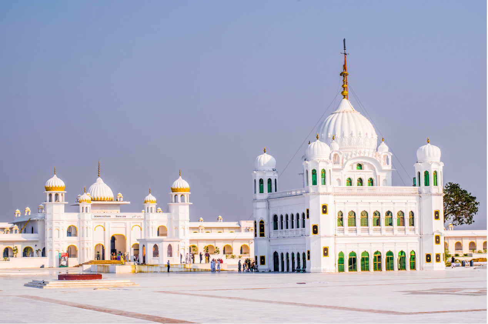
NTCB
National Tourism Coordination Board
Tourism is a focused area of the present government. Several initiatives are being undertaken to garner the potential offered by the tourism industry. To develop and enhance coordination with provinces, federal ministries, and private actors, facilitate in the development of policies, strategies, framework, etc, to market and promote tourism potentials nationally and internationally; and capacity building for the provision of quality human resource , the Government has constituted the National Tourism Coordination Board (NTCB). NTCB is mandated to:
WHERE WE GO
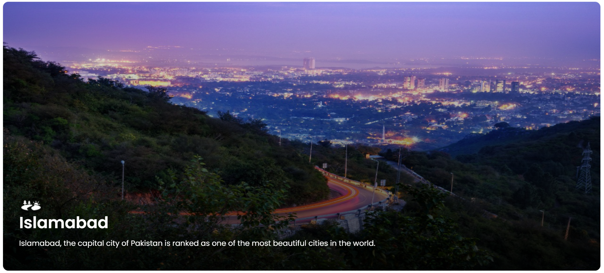
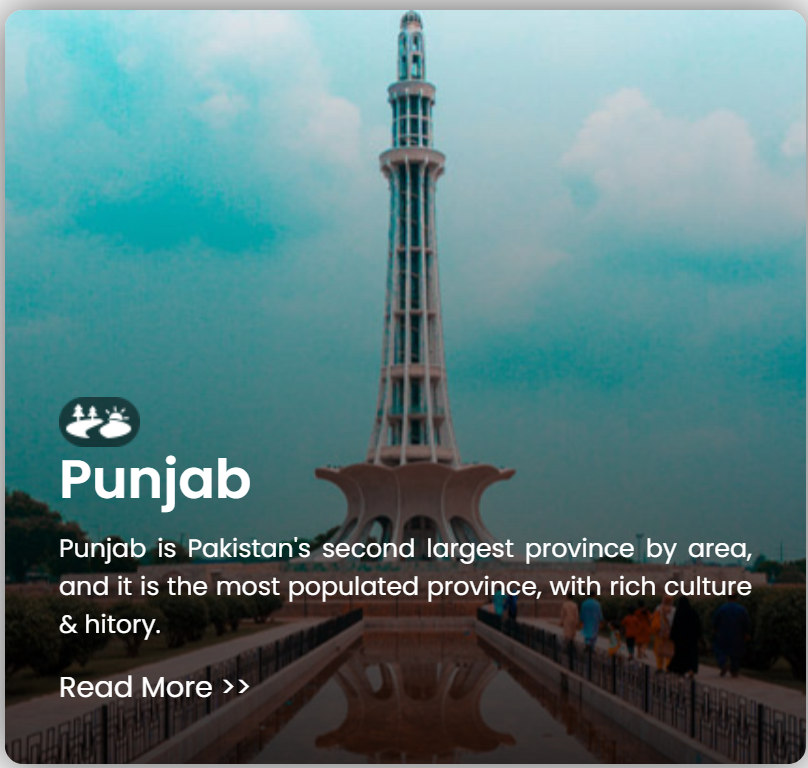
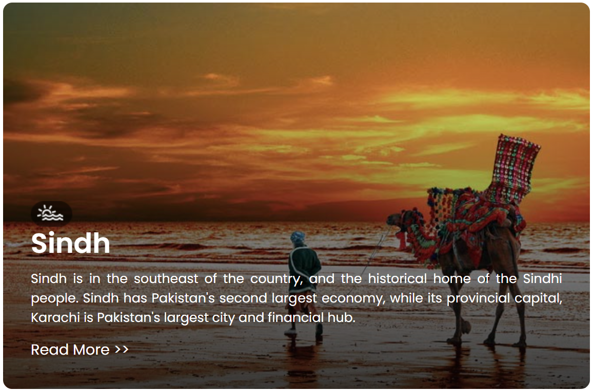
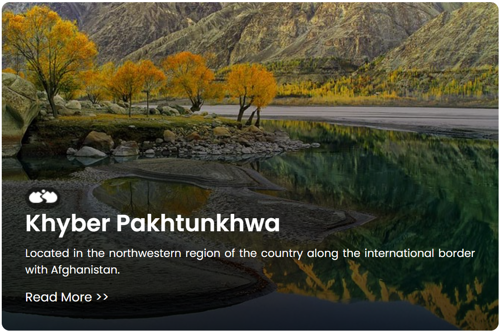
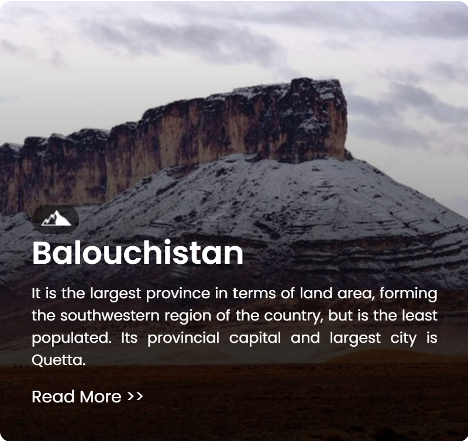
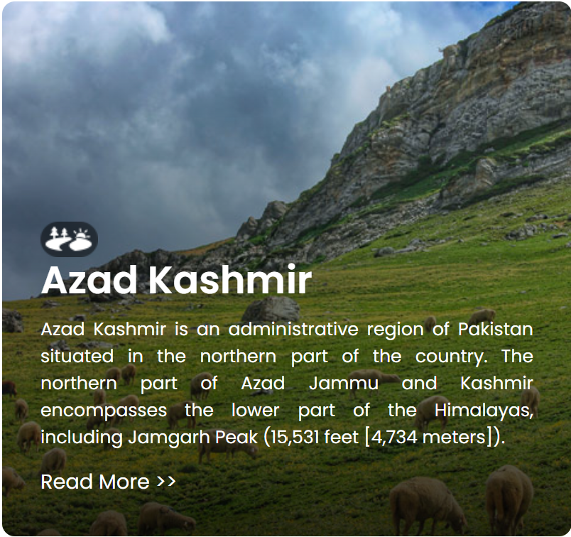
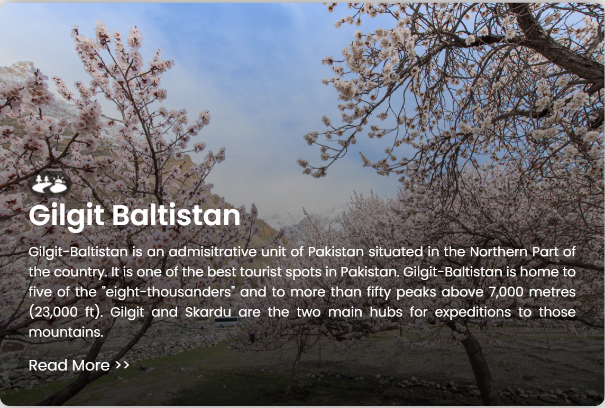